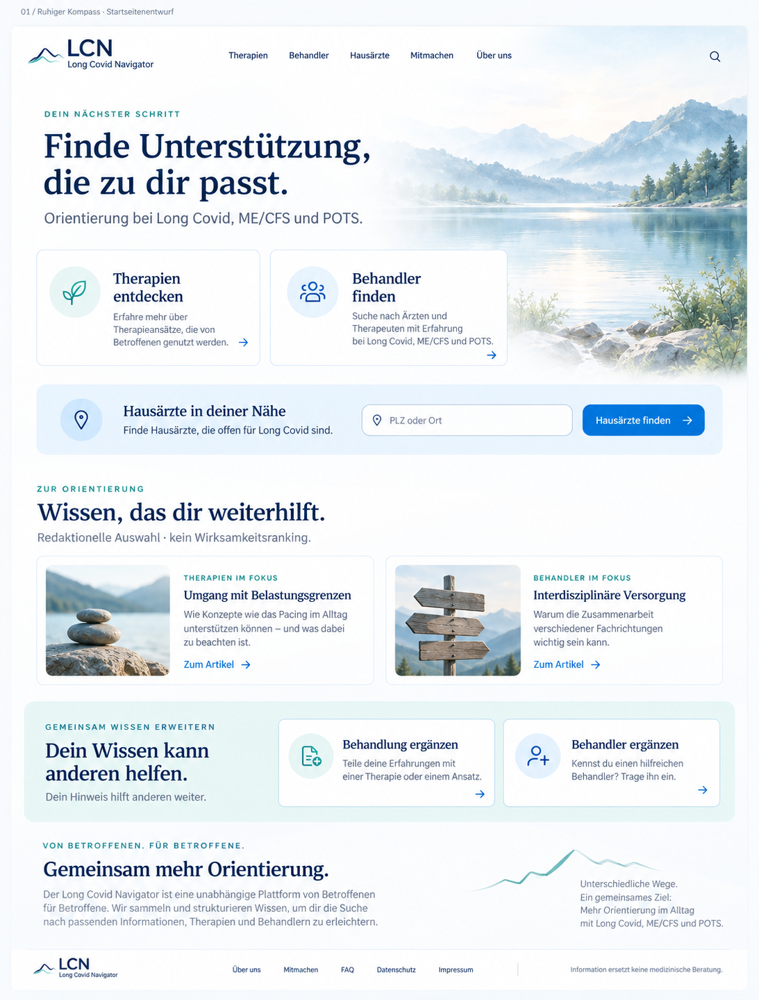
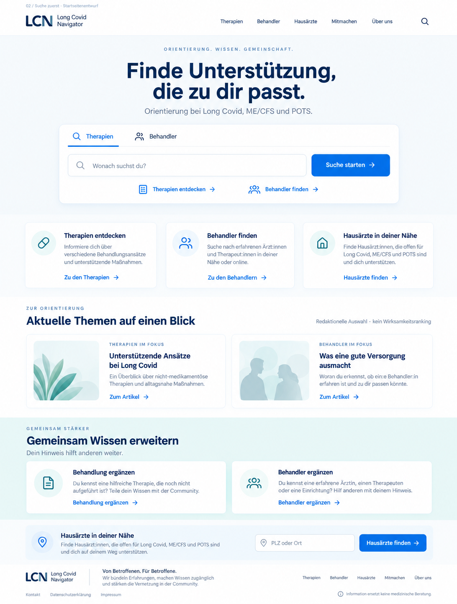
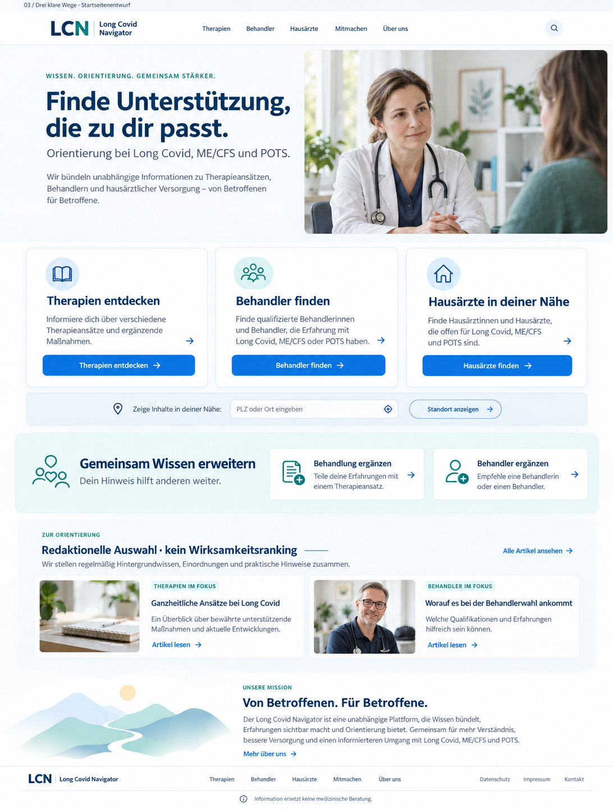
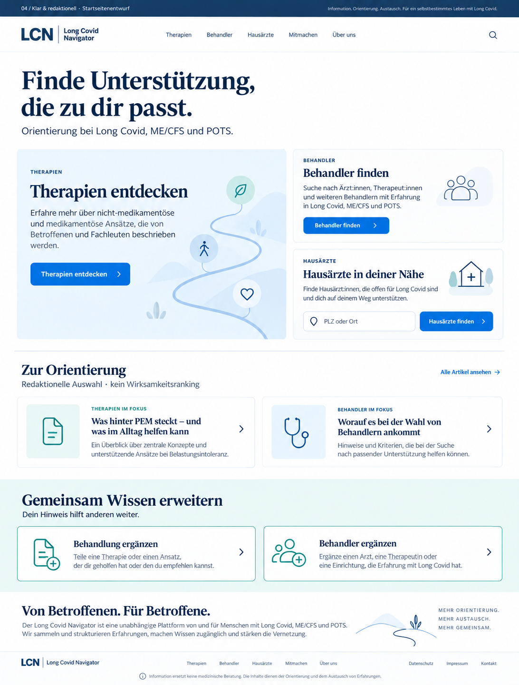
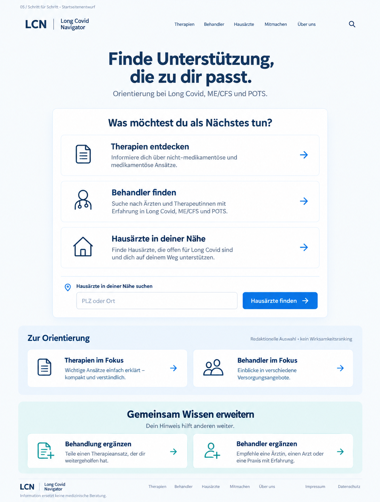

Die vorhandenen Farben bilden die Grundlage. Die Suche rückt nach oben, Hausärzte erhalten einen eigenen Einstieg, und „Behandlung ergänzen“ sowie „Behandler ergänzen“ stehen in einer eigenen Zeile.
Bild anklicken für die volle Auflösung. Grafische Konzepte mit ImageGen; einzelne Bildtexte, Motive und das dargestellte Logo sind Entwurfsvorschläge. Bei der Umsetzung wird das bestehende LCN-Logo verwendet. Die Startseite wurde nicht verändert.
01 · Ruhiger Kompass
Vertrautes Landschaftsmotiv, zwei klare Einstiege und eine kompakte Hausarztsuche. Mein Favorit für eine freundliche, praktische Startseite.

02 · Suche zuerst
Die Suche steht im Mittelpunkt. Gut für Besucher, die ihr Anliegen bereits kennen; eine globale Suche wäre gesondert umzusetzen.

03 · Drei klare Wege
Therapien, Behandler und Hausärzte gleich sichtbar. Ein menschliches Bildmotiv schafft Nähe.

04 · Klar & redaktionell
Typografisch und kuratiert. Mehr Orientierung durch wenige ausgewählte Inhalte und eine eigene Mitmachzeile.

05 · Schritt für Schritt
Große, untereinander angeordnete Optionen und wenig Ablenkung. Die konsequenteste Reduktion.
